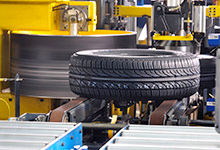
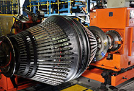

หน้าหลัก >> เกี่ยวกับเรา จีที ไทร์
เมื่อคุณใส่ยาง จีที เรเดียล กับรถคุณแล้ว จงมั่นใจได้เลยว่าคุณได้ใช้ยางคุณภาพ ที่มีการควบคุมการผลิตอย่างเข้มข้น และทั่วถึง
ตรวจสอบสภาพยางภายนอกโดยผู้เชี่ยวชาญทางเทคนิค

ตรวจสอบความสมบูรณ์ของรูปทรงด้วยเทคโนโลยีเครื่องจักร
ระบบการความคุมคุณภาพ ณ โรงงานผลิตยาง จีที ไทร์
การดำเนินงานที่ดีเยี่ยม และระบบ EHS

อีกหนึ่งขั้นตอนกระบวนการผลิตยาง จีที เรเดียล
กระบวนการผลิตสินค้า – พิถีพิถันและสอดคล้อง
จีที ไทร์ ได้รับการรับรองอย่างเป็นทางการ จากประเทศต่างๆทั่วโลก ในเรื่องของคุณภาพและความปลอดภัยของสินค้า